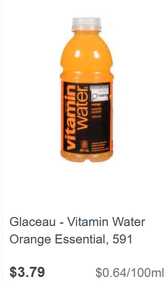
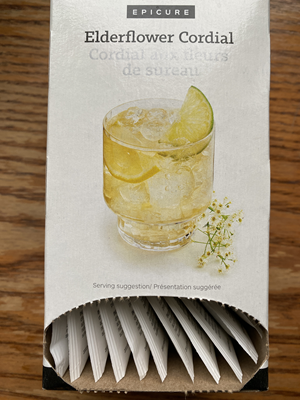
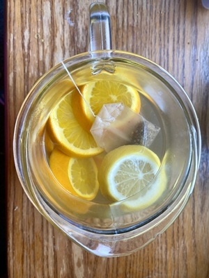

.png "Caring Kitchen Logo")
Vitamin Water
Ok so it's actually iced tea. But it's inspired by the overpriced vitamin water that hit the market some decades ago and still sells enough to keep going:

You can stock up on organic teas when they're on sale. One teabag will make an entire pitcher of iced-tea that tastes just like vitamin water but for $0.25 instead of $4.00.

This way, you can sweeten it as much or as little as you want, with whatever you choose. Top it off with sliced fruit for extra vitamins. Pack it in your fav travel container to stay hydrated while saving money every time you leave the house.
